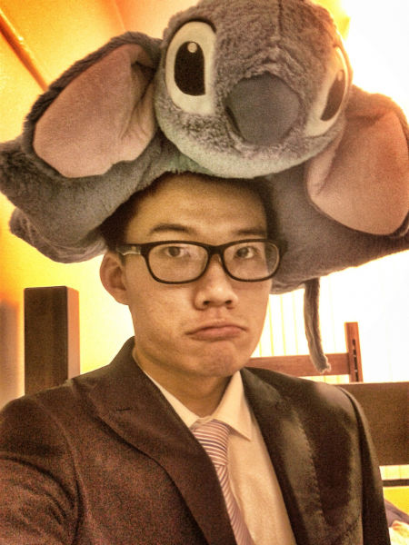

This is about me
Hi I am Qihang Chen, a UF Sophomore majoring in advertising. I will be posting some photos I take and for more information, you can visit my blog on tumblr. Basically, I create this website for the class MMC3260. I will use all the css and html knowledge to build the website. I will try my best to create a beautiful layout and designing format. On the gallery page, I will upload some of my photographs with the descriptions and for more information and photos, please visit my Tumblr blog and you are welcomed to leave your comments. I am also a fan of video games. I have posted several games reviews on the Tumblr. I want to share my gaming experience with people and provide the news of the Castlevania, a a video game series produced by KONAMI. Castlevania is a video game series created and produced by the Japanese video game company KONAMI. The series debuted in Japan on September 26, 1986, with the release for the Family Computer Disk System. I also want to show my own-designed pictures of game characters with others. I hope my blog can become a good platform for the game fans like me. I will update my blog once a week and if you a fan of video games, please do not be hesitated to follow my blog.